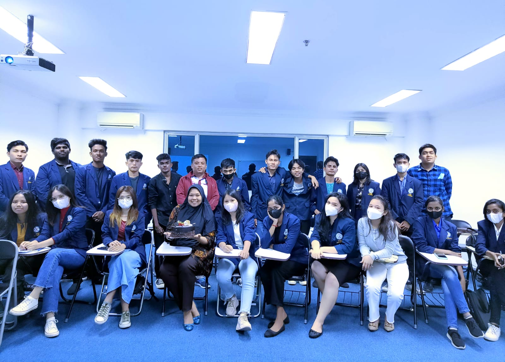

|
Saya ucapkan terima kasih atas kunjungan anda ke website saya.Pada website ini anda dapat melihat
profil data diri saya
dan kegiatan kegiatan yang saya lakukan. Di bawah ini adalah puisi yang saya buat beberapa waktu lalu. Inspirasi puisi ini datang ketika saya termenung sendirian dan memandang langit yang luas. Aku dan Tuhanku
Ketika aku memandang langit |
||
| Nama Lengkap : | JepitanHati S. laia |
| Nama panggilan : | Zhaythyung Z03 |
| Tempat Tanggal Lahiir : | Orahili 24 February 2003 |
| Agama : | Kristen Protestan |
| gol : | 0 |
| Pekerjaan | Mahasiswa |
| Hobbi : | Footbal |
| Email saya : | jhayly4@gmail.com |
 |
Pada akhir tahun 2023 nanti saya dan teman-teman mempunyai acara tahun baruan di Bali. Rencananya kami dibali mulai tanggal 29 Desember sampai 2 Januari. |
SERIBU TANYA Adakah seuntai kataTanpa bicara? Adakah sejuta jawab Tanpa tanya? Adakah langit kelam Tanpa mendung hitam? Adakah guratan merah darah Tanpa luka? Adakah isak tangis pilu Tanpa kesedihan? Adakah rasa damai Tanpa perjuangan? Begitulah hidup manusia Hamba yang selalu bertanya Adakah keadilan di bumi ini? O, betapa banyak waktu Untuk menjawab semua itu |
| oleh jhay |
SEBUAH PUISI UNTUK SAHABATKU Matamu bagaikan kilatan pedang yang tajam Menghujam tepat di hati lawanmu Tutu katamu membuat suasana jadi tentram Mengapa sekarang kau terdiam Tanpa candamu hari-ahriku kelabu Dukamu bagai tangisan alam Bawakan sebuah kesedihan yang dalam |